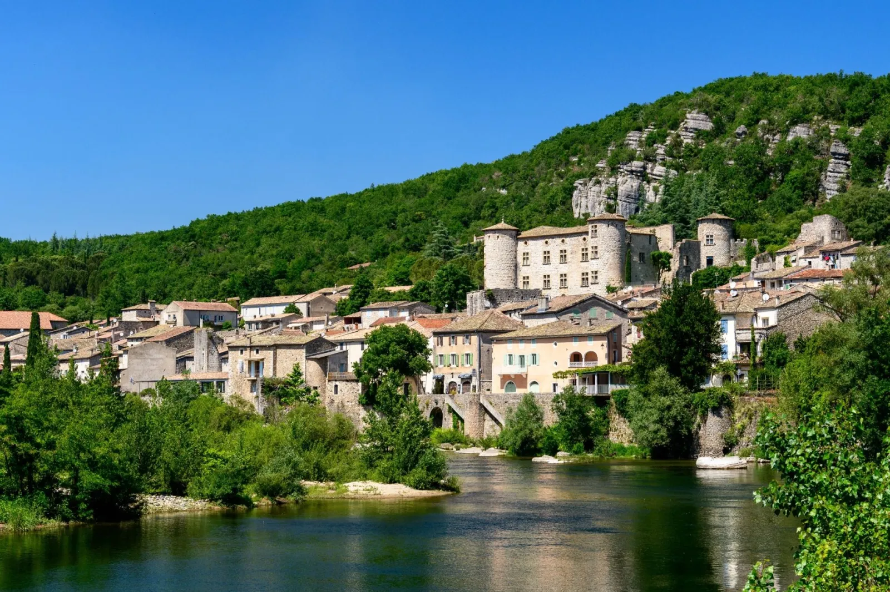

Perched on a rocky spur above the Ardèche river, the Château de Vogüé looks down over one of the department's most beautiful villages, officially listed among the Most Beautiful Villages of France. Its construction dates to the late 12th century, commissioned by Raymond I de Vogüé, whose family had already held the site since 1084, drawing income from tolls on the river below. Having weathered the centuries, changed hands more than once, and survived fires and rebuilding, the castle still belongs to the de Vogüé family today, about 24 minutes' drive from Les Cabritas.

Nine centuries of history, one family
Built at the end of the 12th century, the castle passed in the 14th century to the de la Gorce family, before being substantially rebuilt in the 15th century by the Rochemure du Besset family, who added four towers. In 1603, Marquis Melchior I de Vogüé bought the estate and remodelled it in Renaissance style, creating the suspended gardens for which it's known today. Abandoned in the 17th century, then burned and looted during the French Revolution, the castle was finally bought back and restored by Léonce de Vogüé in 1839, who even opened a school there. Since 1971 it has hosted temporary contemporary art exhibitions while remaining a private family property.
A keep, a chapel, and a garden suspended above the village rooftops
A visit to the castle takes you through several centuries of architecture, from the medieval keep and chapel to the hall where the Estates of the Vivarais once met. The highlight is the "jardin de la marquise," a suspended garden offering sweeping views over the village's terracotta rooftops, the Ardèche river and the surrounding mountains. Below, the village of Vogüé itself is worth exploring, with its vaulted lanes and honey-stone houses built into the cliffside, right at the water's edge.
Good to know before your visit
Guided tours of the castle run daily at 11am, generally from April to mid-September; it's worth checking exact opening dates in advance. Allow a good hour for the visit, and consider adding a walk through the village and, in warm weather, a swim in the Ardèche just below. From Les Cabritas in Saint-Alban-Auriolles, allow about 24 minutes' drive to reach Vogüé.
Practical information from Les Cabritas
- Distance from Saint-Alban-Auriolles: about 24 minutes' drive
- Best time to visit: April to September, during guided tour hours
- Ideal for: heritage lovers, families, fans of characterful villages, river swimming
Want to discover The Château de Vogüé from your Ardèche gîte?
Les Cabritas Sud-Ardèche welcomes you in Saint-Alban-Auriolles, in the heart of Southern Ardèche, for a comfortable stay with a private pool, just steps from the region's most beautiful sites.
Check availability